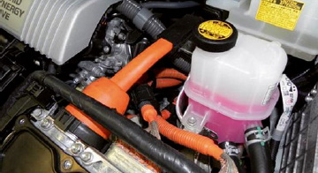
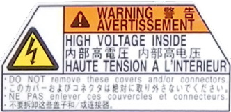
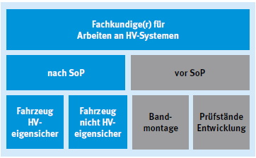

In Zeiten der Diskussion um die globale Erwärmung werden immer höhere Ziele hinsichtlich der Reduzierung von Emissionen gesetzt.
So wird für den Antrieb von Kraftfahrzeugen vermehrt ein Elektromotor eingesetzt.
Schon heute besteht eine Vielzahl unterschiedlicher Antriebssysteme, bei denen der Elektromotor entweder als alleiniger Antrieb oder als Unterstützung eines Verbrennungsmotors bei der Beschleunigung zum Einsatz kommt. Derzeit wird vorausgesagt, dass der Anteil dieser Kraftfahrzeuge ständig wachsen wird.
Trotz bewährter Technik sind auch Fahrzeuge mit Hochvoltsystemen regelmäßig zu warten und instand zu setzen.
Bei unsachgemäßen Arbeiten kann es dabei zu Körperdurchströmungen, Störlichtbogenbildung oder der Kombination aus beiden kommen. Die Folgen können, abhängig von der Einwirkdauer, schwere äußere und innere Verletzungen oder der Tod sein.
Eine elektrische Gefährdung für den Menschen liegt vor, wenn die Spannung zwischen den aktiven Teilen größer als 25 V Wechselspannung (alternating current, AC) oder 60 V Gleichspannung (direct current, DC) ist und der Kurzschlussstrom an der Arbeitsstelle den Wert von 3 mA AC oder 12 mA DC übersteigt oder die Energie mehr als 350 mJ beträgt.
Hochvoltsysteme in Kraftfahrzeugen beinhalten Komponenten, die oberhalb von 60 V Gleichspannung oder 25 V Wechselspannung betrieben werden. Aktuelle Hybrid-Fahrzeuge arbeiten mit Gleichspannungen von bis zu 650 V und Strömen von 125 A.
Im Allgemeinen beinhaltet das Antriebssystem eines Hybrid-Fahrzeugs die folgenden HV-Komponenten:
Bei Fahrzeugen mit Klimatisierung wird das Klimasystem durch einen elektrisch angetriebenen Kompressor ergänzt.
Aber auch in konventionellen Fahrzeugen sind HV-Komponenten, wie
verbaut.
Bei der Kennzeichnung von Hochvoltkomponenten haben sich die Automobilhersteller auf orangefarbene Kabel und Aufkleber mit dem Hinweis auf Hochvolt geeinigt. Auf den HV-Batterien sind als Hinweis die höheren Voltzahlen angegeben.

Abb. 8-1 Orange gekennzeichnete HV-Kabel
Beschäftigte, die Arbeiten an HV-Systemen durchführen sollen, benötigen eine zusätzliche Qualifikation. Dabei werden sie zu Fachkundigen für Arbeiten an HV-eigensicheren Systemen in Kraftfahrzeugen qualifiziert.

Abb. 8-2 Beispiel einer Kennzeichnung von HV-Komponenten
Fachliche Anforderungen an Personen, die elektrotechnische Arbeiten ausführen, werden in verschiedenen Vorschriften und VDE-Bestimmungen festgelegt, besonders in der:
Ein HV-eigensicheres Fahrzeug gewährleistet durch technische Maßnahmen am Fahrzeug einen vollständigen Berührungs- und Lichtbogenschutz für die Mitarbeiter gegenüber dem HV-System.
Um eine klare Zuordnung der Qualifikationsmaßnahmen zu ermöglichen, wird zwischen den Arbeiten "Vor Start of Production" und "Nach Start of Production" unterschieden. "Start of Production" (SoP) ist der Beginn der Serienproduktion von Fahrzeugen, die Montage erfolgt nach standardisierten Arbeitsverfahren.
Zu den Arbeiten vor SoP gehören die Projektierungs- und Entwicklungsprozesse, Prototyp- und Vorserienfertigung und Bandmontage.
Zum Geltungsbereich der Fahrzeuginstandhaltung gehören Servicearbeiten an Serienfahrzeugen mit HV-eigensicheren Systemen. Dazu gehören Arbeiten wie das Bedienen von Fahrzeugen (Hybride), die Durchführung nicht elektrischer und elektrischer Arbeiten am HV-System.
Entsprechend den verschiedenen Arbeitsfeldern sind die Beschäftigten zu qualifizieren.
Zudem hängt der Umfang der Qualifizierung entscheidend von der Vorbildung und den praktischen Erfahrungen des Mitarbeiters oder der Mitarbeiterin ab. So ist die Qualifizierung "Vor Start of Production" in Qualifizierungsstufen unterteilt.
Über die durchgeführten theoretischen und praktischen Qualifizierungen ist ein Nachweis der erworbenen Fähigkeiten und Kenntnisse erforderlich.
Allgemeine Instandhaltungsarbeiten an diesen Fahrzeugen (z. B. Arbeiten an der Abgasanlage, Ölwechsel, Reifenwechsel) können vorgenommen werden, solange die Sicherheitssysteme des HV-Systems in Ordnung sind (z. B. keine Beschädigungen an den HV-Komponenten). Die beschäftigten Personen müssen vor Aufnahme der Arbeiten unterwiesen werden, um die elektrischen Gefährdungen des HV-Systems kennenzulernen.

Abb. 8-3 Übersicht Arbeitsfelder HV-Systeme
Sie müssen mit den Kennzeichnungen der HV-Komponenten vertraut gemacht und in die sichere Bedienung des Fahrzeuges eingewiesen werden. Das Arbeiten an den HV-Komponenten ist für sie verboten.
Ausführliche Informationen sind der DGUV Information 200-005 "Qualifizierung für Arbeiten an Fahrzeugen mit Hochvoltsystemen" zu entnehmen.